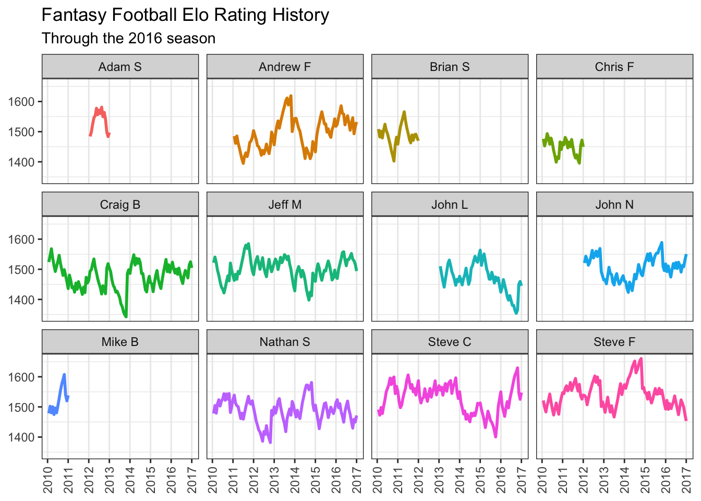

<div id="elo-ratings-background" class="section level2">
<h2>Elo Ratings Background</h2>
</div>
<div id="tuning-the-model-parameters" class="section level2">
<h2>Tuning the model parameters</h2>
</div>
<div id="is-the-model-well-calibrated" class="section level2">
<h2>Is the model well-calibrated?</h2>
</div>
<div id="how-have-the-ratings-changed-over-time" class="section level2">
<h2>How have the ratings changed over time?</h2>
<p></p>
</div>
